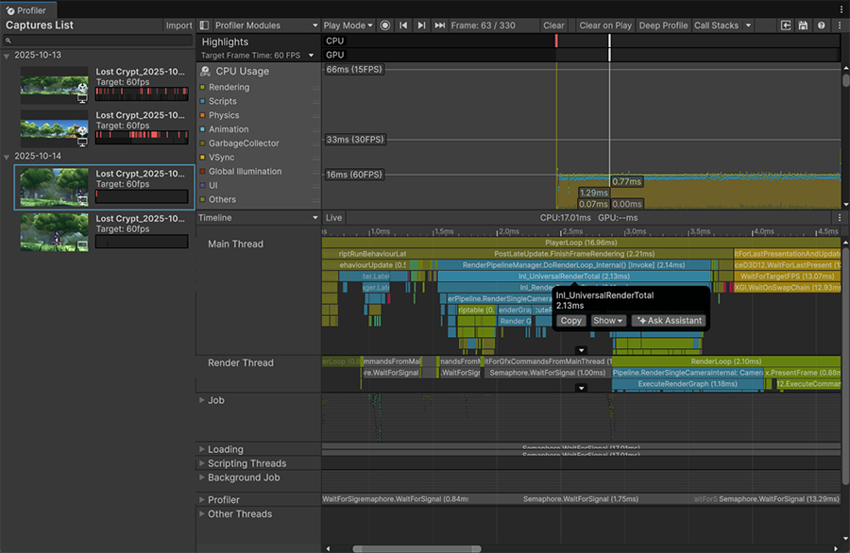

Analyze the performance of your application with the Profiler.
The Profiler records multiple areas of your application’s performance, and displays that information to you. You can use this information to decide what you might need to optimize in your application, and to test the performance of changes you make.
To open the Profiler window go to Window > Analysis > Profiler.

You can inspect script code and view how your application uses certain assets and resources that might be slowing it down. You can also compare how your application performs on different devices. The Profiler has several different Profiler modules which display performance data in areas such as rendering, memory, and audio. You can also use Assistant to investigate performance issues in your project. To learn more, refer to Use Assistant to analyze profiler data from Unity Profiler.
The Profiler is an instrumentation-based profiler, which means that the Profiler uses markers in your application’s code to record detailed timing information about how long the code in each marker takes to execute. The Unity API has profiler markers built in so you can explore the performance of your code, locate performance issues, and identify areas to optimize.
You can use custom Profiler markersPlaced in code to describe a CPU or GPU event that is then displayed in the Unity Profiler window. Added to Unity code by default, or you can use ProfilerMarker API to add your own custom markers. More info
See in Glossary to monitor specific data, or use Deep Profiling to further customize the data you gather.